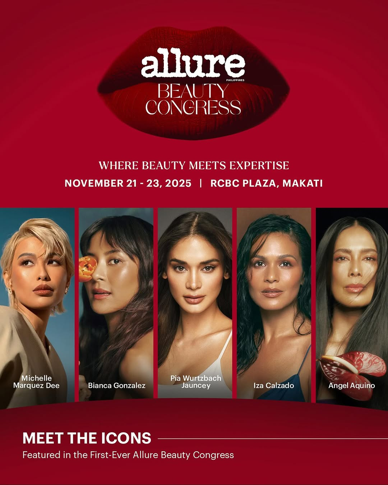

Michelle Dee is part of Allure Philippines beauty congress along with Bianca Gonzalez, Pia Wurtzbach Jauncey, Iza Calzado, and Angel Aquino.
Kapuso beauty queen Michelle Dee continues to strengthen her place in the fashion and beauty scene as a local lifestyle magazine has named her one of its speakers at its inaugural beauty congress.
In one of the more recent posts on its official Instagram account, Allure Philippines announced the five women who have “turned beauty into a movement” and who will be part of their inaugural Beauty Congress, with Michelle being one of them. In the slide highlighting Michelle, she is described as the Miss Universe Philippines 2023, a model, actor, and advocate for autism awareness.
The other women joining Michelle are Bianca Gonzalez, Pia Wurtzbach Jauncey, Iza Calzado, and Angel Aquino.

Michelle's inclusion in Allure Philippines inaugural Beauty Congress is just the latest development in her fashion journey. Michelle was recently in Paris for Fashion Week at the L'Oreal Paris fashion show, as well as the Lacoste Paris Fashion Week show where she was seen with It's Showtime host Anne Curtis, K-pop star Kai, and Thai celebrities Davika Hoorne.